釣行日誌 ＮＺ編 「一期一会の旅：A Sentimental Journey」
巨大肥満体ブラウンの群れ
11/24(SAT)-5
下流に向かって右岸沿いにしばらく歩いて行くと、急にディーンがフラックス：Flax（日本名マオラン）の繁みに分け入って行く。
『え！ こんな所に道があるのかな？』
予想外に分厚く強いフラックスの葉っぱを両手で掻き分けつつ彼の後を追う。森に入るとちゃんとそこには小径があり、左奥の方へと続いていた。ここで置いてけぼりにされたら完全に迷子になるだろうと思われた。
15分ほど歩くとホワイトベイト漁師の仮設小屋に出た。敷地にはツツジの花びらを大きくしたような綺麗なピンク色の花が咲いており、ぜいぜいと息をつく僕の目を癒やしてくれた。もう少し歩くと２軒目の小屋があり、
「あとちょっとで車だぞ。」
と、ディーンが振り向いて声を掛けてくれた。水漏れで両足ともズブズブに濡れたウェーダーが重い。懸命に彼の後を追いかけて行く。ふと気付くと、ディーンの姿が見えない。
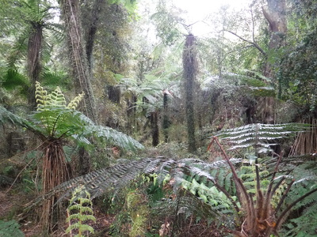
『うわ！こりゃヤバいっ！』
慌てて小走りに駆け出そうとすると、後ろから
「バァ～！」
と驚かす声が。
「な～んだ！そこに隠れてたのかァ！」
今は30代半ばとなり、２児の父ともなったディーンであるが、茶目っ気やジョークはティーンエージャーの頃のままである。本当に置いてけぼりを喰ったら....と思うと内心平穏ではいられなかったが、そこは年の功で平静を装って笑ってみせた。（笑）
再びウェストランドの深い原生林の中、頼りない小径を２人で歩く。シダの大木が天蓋を覆っており、あたりは薄暗い。
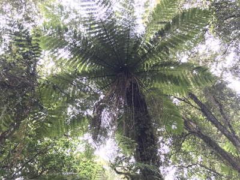
ディーンがまた木陰に隠れて、通り過ぎた僕の後ろから現れて驚かせる。
「わかったわかった。心臓に悪いからもう勘弁してくれよ！」
と頼むと、彼は初めて会った17歳の頃のような笑顔でケタケタと笑った。
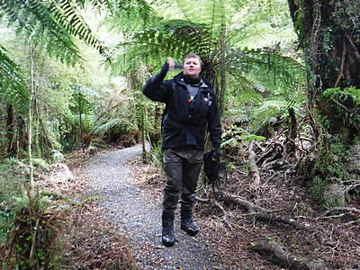
午後4時40分過ぎにトラックまでたどり着き、着替えをする。釣りを切り上げてからけっこう歩いたものだ。シューズとウェーダー、濡れた靴下を脱ぎ、びっしょり濡れた下肢をタオルで拭き、乾いた靴下を履くと実に心地良い。
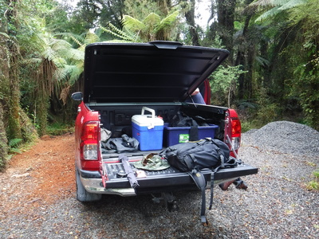
帰途、熱いコーヒーでも飲もうぜ、とのディーンのお誘いで、SH6号線沿いにあるサーモンの養魚場兼カフェに寄る。屋根付きの細長い通路をくぐって行くと、眼下には八角形の整然とした養魚池が並んでおり、40－50cm級のサーモンが群泳している。
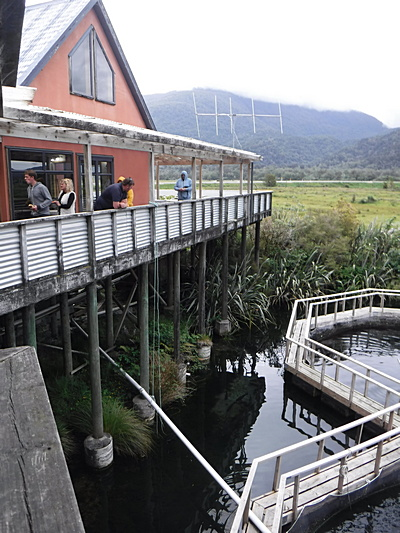
しかし、何と言っても驚かされるのは、おそらくは本流から排水路沿いに遡上して来て、池の周囲の空きスペースに居着いてしまっている巨大肥満体ブラウンの群れである。
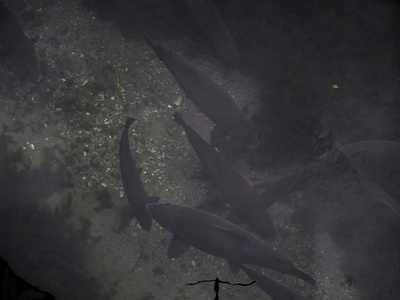
大きさは50～75cmほどもあるだろうか？ ディーンの言うには、ここの大物は20ポンド（約9kg）オーバーだぜ、とのこと。あれを川で狙うなら1Xのティペットが要るな....などと妄想する。暗くなってからあそこの肥満体ブラウン狙いでやって来る地元アングラーがいるとかいないとかの噂があるらしい。（笑）
あいにくカフェの方は閉店時刻の５時を回っていたため、スタッフがすでに店じまいを始めており、熱いコーヒーにはありつけなかった。
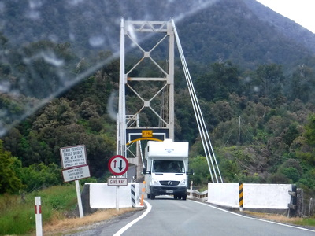
ニュージーランドではおなじみの一方通行の橋（１車線しか無い！）の手前で待って、対向車をやり過ごしてから走り出す。この橋は南島で１番長い吊り橋とかいう話だった。
午後７時前にはロッジに帰り着き、釣り具を降ろし、一息ついてからディーンが夕食を作ってくれた。今宵は茹でグリーンピースとミートパイ、トーストだ。彼はメキシコ産のコロナエクストラという銘柄のビール、僕はオレンジジュース。グルメでは無いし、釣りが出来れば幸せなので毎日シンプルな料理でも不満は無い。空きっ腹でもあり、とても美味しく頂く。
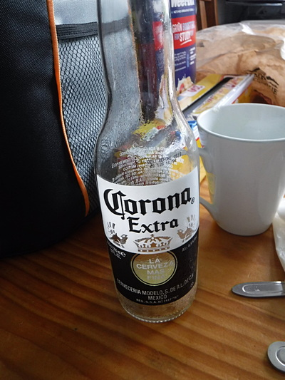
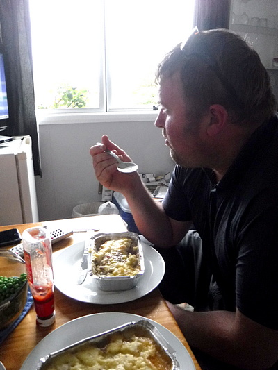
テレビでは、マクドナルドハンバーガーチェーンの創業者：レイ・クロックを描いた映画「ファウンダー ハンバーガー帝国のヒミツ」原題：The Founder、2016年アメリカ を放映していた。会話について行けないので、理解度は低いがなんとか筋を追いつつ鑑賞する。「バットマン」で知られたマイケル・キートンや、「ジュラシック・パーク」のローラ・ダーンが出演していた。
「ゴウ、この映画わかる？ マクドナルドの創業者のストーリーだぜ。」
などとソファーに横になって見ていたディーンが訊ねてきた。
「ああ、なんとかわかるよ。」(笑)
ハリウッドの伝記映画を見ていつも非常に感心させられるのは、コンディションが良く実際に走ることの出来るクラシックカー（それもストーリーの年代にピッタリ合わせて）が大量に用意されていることである。あれはよほどの資金力が無いと出来ないワザであろうと推察される。専門の会社があるのだろうな。グーグルで調べたら、やはり専門の会社がいくつもあるようだ。納得。
映画を見終わって、寝る準備を始める。ここのロッジの洗面所のシンクは、デザインが著しく不細工で、水が出てくる蛇口の下側に手を入れるスペースがほとんど無い。
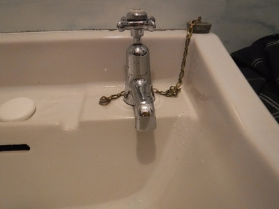
ディーンに
「このタップのデザインは間抜けだよなぁ。」
とそのことを言うと、彼も
「ああ！そいつはカスだ。」
と言って笑った。
洗面所の隅に、見慣れない棒状の物体があったので、彼にあれは何か？と訊ねると、ボトル部分のアロマ液を棒状のディフューザーで室内に拡散させる装置？だとのこと。初めて見たので珍しかった。おそらく日本にもあるのだろうな。
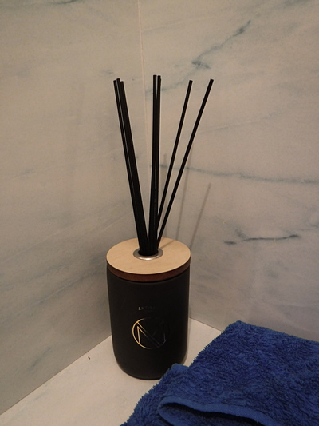
今宵もシャワーですっきりして、常服薬をきちんと飲んで11時にはベッドに溶け落ちた。
釣行日誌ＮＺ編 目次へ
サイトマップ
ホームへ
お問い合わせ